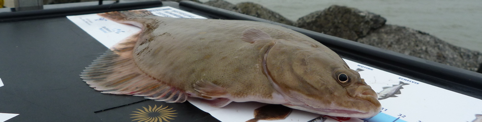
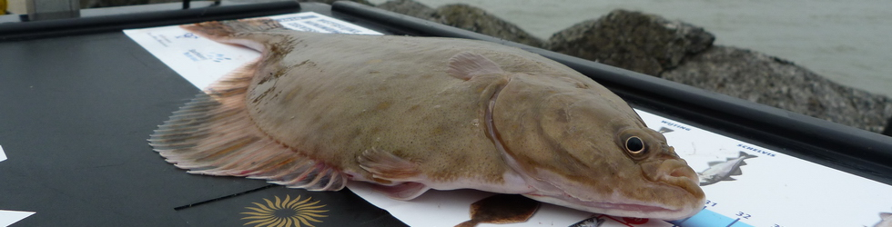
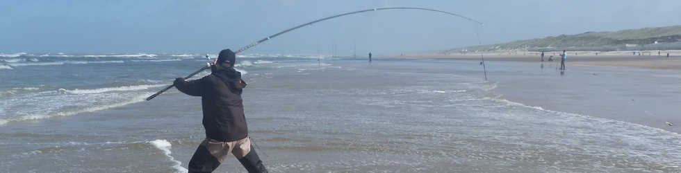
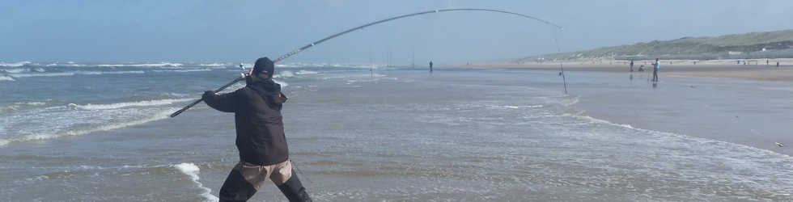

 



Op zeebaars met kunstaas
- Gegevens
- Categorie: Hét Visblad
- Geschreven door Cor Juffermans
 Dat de zeebaars de meest spectaculaire sportvis is van het Nederlandse kustwater, is algemeen bekend. En gezien de gesloten tijd voor bepaalde zoetwater roofvissen én het kunstaasverbod dat tot de laatste zaterdag van mei van kracht is, heb je nu dus écht geen excuus meer om de komende maand niet .zelf een poging te wagen om zeebaars te verschalken!
Dat de zeebaars de meest spectaculaire sportvis is van het Nederlandse kustwater, is algemeen bekend. En gezien de gesloten tijd voor bepaalde zoetwater roofvissen én het kunstaasverbod dat tot de laatste zaterdag van mei van kracht is, heb je nu dus écht geen excuus meer om de komende maand niet .zelf een poging te wagen om zeebaars te verschalken!
Fieldtest Daiwa Seagate E-4500
- Gegevens
- Categorie: De Fieldtester
- Geschreven door Cor Juffermans
De test van een zeebaarsset van Daiwa verliep niet helemaal zoals gepland. De hengel en molen kwamen in september beschikbaar en aangezien langs onze kust juist zo aan het eind van ons seizoen de grootste baarzen worden gevangen, gingen we er vanuit dat onze fieldtesters het materiaal flink aan de tand zou kunnen gaan voelen tijdens de actieve baarsvisserij met kunstaas.
Voor een "lastige" zeebodem
- Gegevens
- Categorie: Voor de surfcaster
- Geschreven door Cor Juffermans
 Wij hier in Nederland zijn maar verwend met die prachtige stranden en die geleidelijk aflopende zeebodem. Toch? Eigenlijk schets ik hier een ideaalsituatie die op veel stranden opgaat, maar er zijn er ook die er onder water toch net iets anders uitzien. Jullie hebben vast wel eens gehoord van kleirichels of de randen aan de vaargeul.
Wij hier in Nederland zijn maar verwend met die prachtige stranden en die geleidelijk aflopende zeebodem. Toch? Eigenlijk schets ik hier een ideaalsituatie die op veel stranden opgaat, maar er zijn er ook die er onder water toch net iets anders uitzien. Jullie hebben vast wel eens gehoord van kleirichels of de randen aan de vaargeul.
Op zeebaars met een dobber
- Gegevens
- Categorie: Voor de kantvisser aan zee
- Geschreven door Cor Juffermans
Wie in de buurt van de pieren van IJmuiden en Wijk aan Zee woont én een liefhebber van het vissen op en aan zee is, weet dat de Zuid- en de Noordpier, zoals wij ze hier noemen, bekend staan om hun diversiteit aan vis die daar te vangen is. Het hele jaar door is het daar een komen en gaan van verschillende soorten vis die onze Noordzee rijk is. Geep, makreel, maar ook zeebaars...
Grote vis? Groot denken!
- Gegevens
- Categorie: Tips en Trucs
- Geschreven door Cor Juffermans
Hoe vaak het mij al niet is overkomen, weet ik niet, maar ik weet zeker dat ik grotere vissen heb verspeeld, dan dat ik tot dusver heb weten te landen. Enkel en alleen omdat ik op dat moment met de verkeerde onderlijn stond te vissen. Sta ik lekker te makrelen met een 2-haaks verenpaternoster. Besluit ik na de aanbeet eens niet op te halen, maar hem te laten zakken naar de bodem...
De zeebaars is er!
- Gegevens
- Categorie: Voor de surfcaster
- Geschreven door Cor Juffermans
 Dus? Gaan we voor zeebaars en laat ik nou nog een schitterende onderlijn in portefeuille hebben waarmee we die zeebaars kunnen belagen. Het is de Clip down Pennel rig en hij zat ooit in het onderlijnenprogramma van Gemini Genie Ltd. Tackle. Kant en klare onderlijnen maken ze bij Gemini Genie Tackle niet meer, maar de onderdelen waarmee je ze maakt wel!
Dus? Gaan we voor zeebaars en laat ik nou nog een schitterende onderlijn in portefeuille hebben waarmee we die zeebaars kunnen belagen. Het is de Clip down Pennel rig en hij zat ooit in het onderlijnenprogramma van Gemini Genie Ltd. Tackle. Kant en klare onderlijnen maken ze bij Gemini Genie Tackle niet meer, maar de onderdelen waarmee je ze maakt wel!